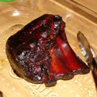
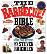
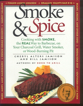
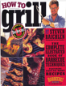

For Great Meal Ideas!
Mission:
Smokers BBQ Supply is committed to providing our customers with the finest selection of the very best BBQ equipment and accessories.
Recipes that will make your mouth water . . .
Books & Recipes
People have been grilling over open flames as long as there have been flames. But let's face it, roast mastodon doesn't sound half as good as Sage Rubbed Veal Chops with Jerky Sauce. Tastes have changed, and we have gotten a little better at grilling.

INGREDIENTS:
5 pounds baby back pork ribs
1/2 gallon apple juice
1 head garlic, separated into cloves
1 tablespoon granulated garlic
2 cups barbeque sauce
READ REVIEWS
Reviews Here
Review/Rate This Recipe
Save To Recipe Box
Post a Recipe Photo
Post a Favorite Food List
Create a Menu
DIRECTIONS:
Prepare charcoal in a smoker, and bring the temperature to 225 degrees F (110 degrees C).
Cut the ribs into smaller portions of 3 or 4 ribs, and place them in a large pot.
Pour in enough apple juice to cover. Place a lid on the pot and bring to a boil. Remove from the heat, and let stand for 15 minutes.
Lightly oil the grate in your smoker.
Place ribs on the grate, and throw a few cloves of garlic onto the hot coals.
Close the smoker. Maintain the temperature at 225 degrees F (110 degrees C) by adding more charcoal as needed.
Smoke the ribs for 7 hours, adding more garlic cloves to the coals occasionally.
Make a sauce by mixing together the barbeque sauce with 2 cups of the apple juice from the pot.
Season with granulated garlic. Baste ribs with this sauce while continuing to cook for another 30 minutes.
Find more great recipes in the books below . . .
BBQ Cook Books
(Click the image for a larger view)
| Product Image: | Description: | Smoker's Price |
|---|---|---|
|  | The Barbecue! Bible Over 500 Recipes (Paperback). Once the book gets your attention, a few things are revealed. Grilling makes sense. It is simple, economical, and best of all, it tastes good. Grilling is not just about huge slabs of meat. Pizza, shellfish, vegetables, and even pasta have a place on the grill. And grilling is fun. Playing with fire under an open sky wins hands down over a broiler in the kitchen. |
$11.00 |
 |
Barbecue! Sauces: Sauces, Rubs, and Marinades, Bastes, Butters, and Glazes that are slathered or smeared on grilled fare and barbecue before serving(Paperback) This cookbook offers a lively introduction to such saucy American standbys as Kansas City-style and Texas-style barbecue while paying due respect to such international grill classics as Indian tandoori, Argentinean chimichurri, Korean boolkogi, and Indonesian satay. |
$9.95 |
|  | Smoke & Spice: Cooking with Smoke, the Real Way to Barbecue, on Your Charcoal Grill, Water Smoker, or Wood-Burning Pit (Paperback) Smoke & Spice : Cooking with Smoke, the Real Way to Barbecue. Cooking with Smoke, the Real Way to Barbecue, on Your Charcoal Grill, Water Smoker, or Wood-Burning Pit. |
$10.95 |
|  | How to Grill: The Complete Illustrated Book of Barbecue Techniques (Paperback) This book focuses on creative techniques, employing everything from butcher's string and bricks wrapped in foil to inserting a half-full can of beer into the cavity of a chicken: when placed on the grill it simultaneously steams the bird and holds it upright, allowing the skin to grow crisp. Indeed, Raichlen's (Miami Spice; High-Flavor Low-Fat Cooking) approach is anything but shy. |
$20.95 |